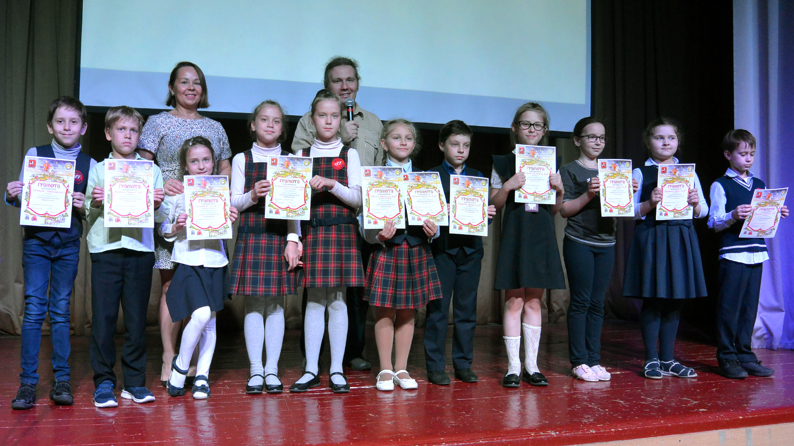

Уважаемые посетители! Мы разместили плейлист с работами участников номинации "Анимационное кино", чтобы вы могли дать обратную связь. При воспроизведении плеера работы воспроизводятся автоматически друг за другом, а вот правила и кретерии оценок останнутся прежними.
15 мая прошёл первый конкурс анимационного кино «Волшебная палочка». В основной номинации «Анимационное кино» было представлено 14 работ из ЦТР и МЭО «Радость», московских школ №109 и №201, и детской анимационной студии «Ямальские звёздочки». Жюри конкурса в лице руководителя студии «Сказка с радостью» Юлии Сарычевой и руководителя студии детского кино «Идеяфильм» Ильи Панфилова присудили грамоту за лучшее изобразительное решение Полине Шибиной и Алисе Каменец за фильм «Приключение колобка». Награду за лучший сюжет поделили Дарья Лукьянова с фильмом «Мать двоечника» и Анастасия Берлин с отрывком сказки «Волшебное кольцо». Лучшим звуковым решением были отмечены фильмы «Снеговик» и «Три кота».
Фильм «Счастье» Алины и Ксении Блиновых, Полины Шибиной и Алисы Каменец получил грамоту за качество рисунка. Так же жюри были отмечены две сказки «Колобок» Устюговой Марии и Сафии. Работы Рыбакова Даниила, Саниной Елизаветы и других ребят, которые дебютировали в номинации «Gif анимация». Конкурс прошёл в непринуждённой творческой атмосфере, участники обсуждали с жюри сильные и слабые стороны анимации и делились своим впечатлениями. Хочется верить, что конкурс послужит хорошей мотивацией для того, чтобы удивлять зрителей новыми работами в следующем учебном году. Если это удастся - тогда конкурс можно будет провести снова и вдохновить новых участников. Как справделиво заметили дети: "Для конкурсов важны не награды, а возможность узнать что-то новое о своей работе".